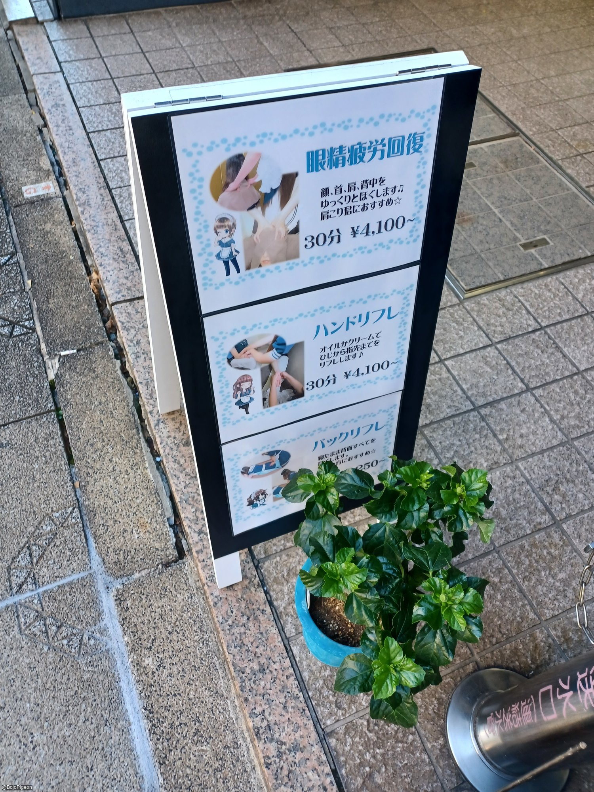
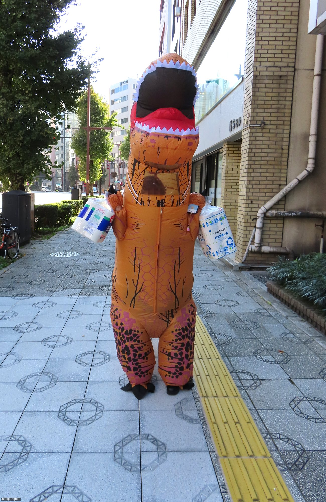
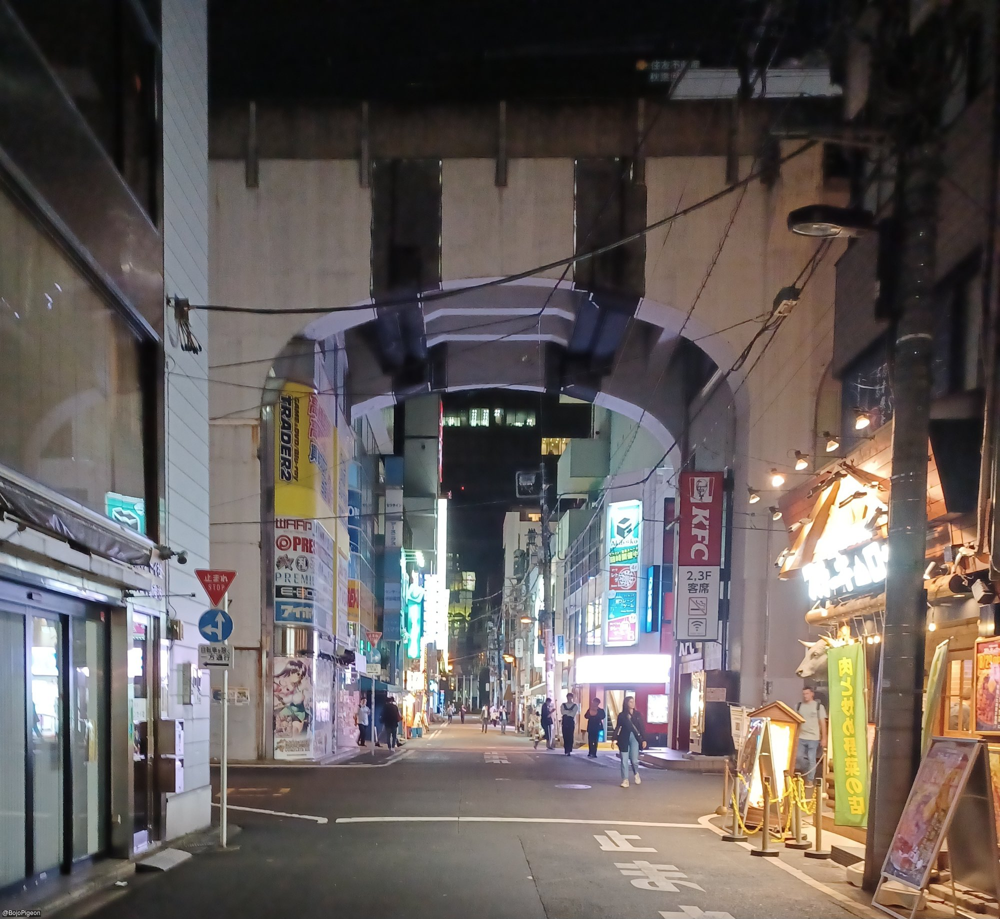
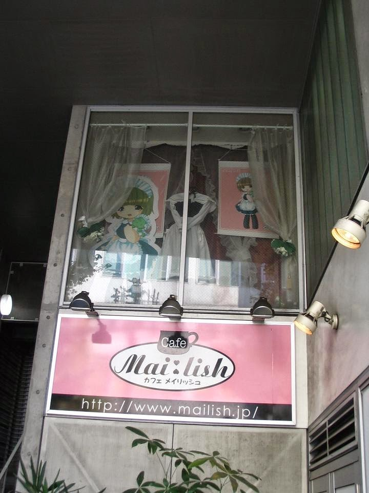
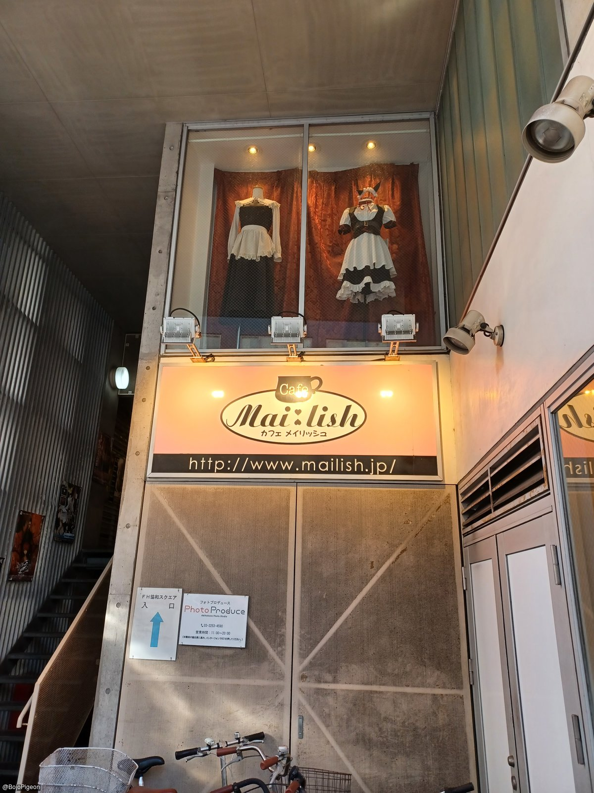
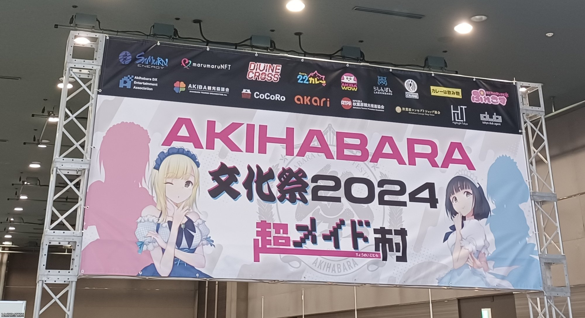
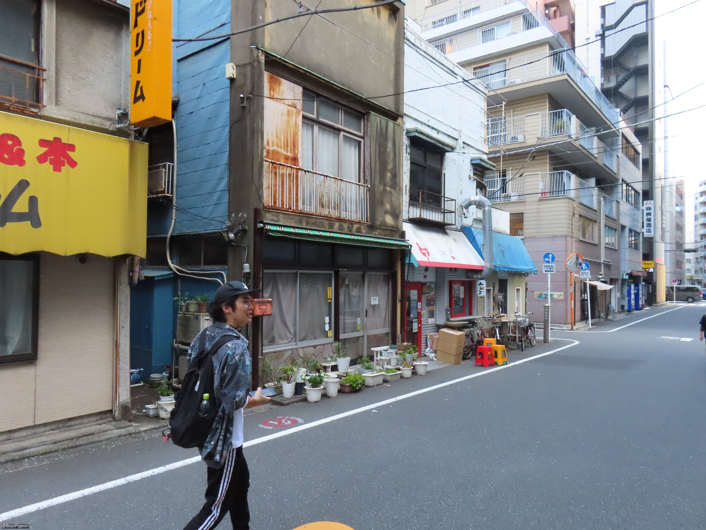
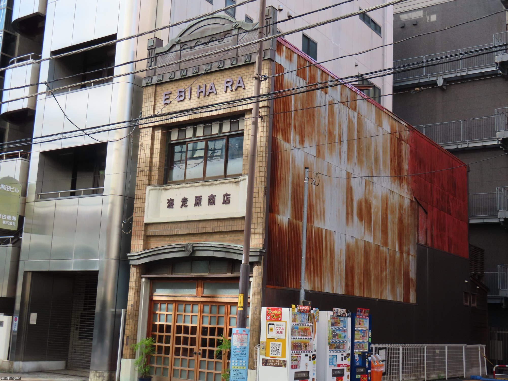
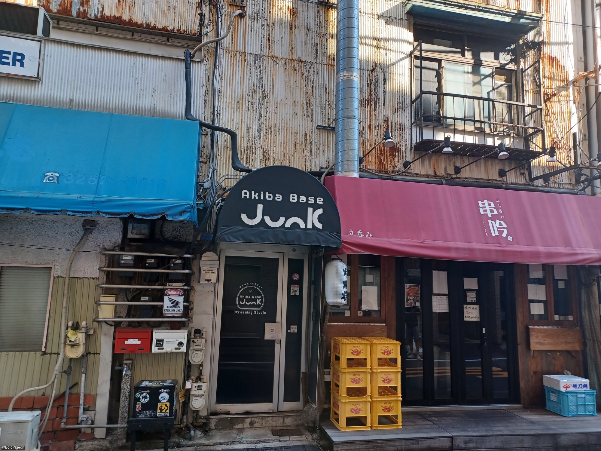

Top 100+ things to do in Akihabara
I consider Akihabara to be my "Home Town in Japan" and visit
there every one to two years. There are a lot of Akihabara guides
on the Internet, and while there are many good ones, there are also many that
are either superficial or predictable. I decided to write down my top
suggestions, originally just off the top of my head, based on the
things I actually enjoy doing. Most of these are not things I
would schedule or plan for, but just do spontaneously while I'm in
the neighborhood. Many of them are also not necessarily unique to Akihabara,
or even Tokyo.
I would not consider this list to be complete, since there are
lots of things to do in Akihabara that don't fall under my
interests. Among these would be: bars, cosplay shops,
pachinko, karaoke, adult goods shops, animal cafes, and love
hotels/rental rooms.
Location
Map
xTwitter
flickr
LinkTree
Hanabusa Inari Shrine
The little Shinto shrine hidden deep in Akihabara. Visiting
this place makes you a true Akihabara Insider.
Maid Cafe JAM Akihabara
Maid cafes can generally be divided into three broad categories:
classic, moe, and girls bar. JAM is one of the oldest
classic style maid cafe. They staff wear a maid style uniform, but
they operate like a normal cafe, with a daily special and
occasional collaborations. Their prices are reasonable and they
don't have an entrance fee.
Location: Japan, 〒101-0021
Tokyo, Chiyoda City, Sotokanda, 3 Chome−2−13 山口ビルB1F
URL: http://www.jam-akiba.com/
Kanda Myojin Shrine
This is a very large Shinto shrine near Akihabara with lots of
events going on throughout the year. They have a gift shop with
souvenirs and even snacks. There are areas where people have
hung up ema prayer board with their wishes on them, and
since it's near Akihabara, they often have artistic manga-style
illustrations added.
Super Potato Akihabara Branch
A very popular vintage video game shop that has lots of hard to
find games and consoles. This has become very popular and
well known with tourists lately, so it might be crowded at times.
Creepy Vending Machine Corner
In Kanda Sudacho, near the old Niku-no-Mansei building, is an old
building with a lot of very strange vending machines in it. It also has
a lot of signs posted with strange messages, including various
warnings against people who litter or vandalize the
location. In the old days the building still had a sign
reading "Takumi Lining Shop", so it was clearly once part of the
button and lining district in that area. In addition to an odd
variety of items in the vending machines, there are also
"emergency food kits" wrapped in paper with odd, disturbing short
stories printed on the outside. Be aware that if you buy
these, you're buying the stories, as the items on the inside are
generally just cheap snacks. This is more of a place to go
to contemplate the mystery than to do a lot of shopping. But some
of the unique items would make interesting souvenirs.
Location: Japan,
〒101-0041 Tokyo, Chiyoda City, Kanda Sudacho, 2 Chome−１９−7
URL: Ownership is also a mystery
Walk along Chuo-Dori
This is the main street running north-south in the Akihabara
area. Along this route are numerous restaurants, cafes,
retail shops, souvenir shops, etc. You'll see lots of people
dressed up and handing out fliers or holding up placards
encouraging people to visit bars and restaurants - but be cautions
about any place that uses touts to get customers. On Sundays
the section of the Chuo-Dori in Akihabara closes to vehicle
traffic to allow full access to pedestrians. But, be sure to
get off the main street and explore the side streets as well.
Location (nearest Akihabara station): 1-chōme
Sotokanda, Chiyoda City, Tokyo 101-0021, Japan
Cutie Relax - Maid Reflexology
After walking around Tokyo for a while you may have sore feet or
a sore back. There are various massage and reflexology
places in the are, but the one I recommend is Cutie Relax, which I
have been to several times now. There are also a few places
that present a less wholesome aesthetic, so do some research before going
into a random massage or reflexology shop.
Location: Japan,
〒101-0041 Tokyo, Chiyoda City, Kanda Sudacho, 1 Chome−5−16 ヤマヨビル
2階
URL: https://www.cutierelax.com/
xTwitter: https://x.com/cutie_relax


Cutie Relax is on the 2nd floor of the Yamayo Building
Maid Road
A road running parallel to the Chuo-Dori to the west, with more
pedestrian traffic than vehicles. You can often see many girls in
maid outfits (and other cosplay) advertising their shops. There
are also many popular retail shops along this road, such as
Kotobukiya, Akibaoo, MaiDreamin, Super Potato, and the Akiba
Cultures Zone Building.
Location (starting point near Akihabara KFC): 1-chōme-4
Sotokanda, Chiyoda City, Tokyo 101-0021, Japan

Quiet moment on Maid Road in the evening
mAAch eCute
Located in the old Manseibashi train station, this charming
shopping mall is fun to explore, with shops, restaurants, and
coffee shops, both on the inside, and along the building's
southern exterior. Note: pronounced maachi ekyuuto.
Yodobashi Akiba
It's easy to lose a whole day in Yodobashi Camera. There are
multiple food vendors outside on the first floor. Inside, there
are multiple floors of electronics, accessories, and stationary
products. On the 8th floor there are a veriety of restaurants,
and on the 9th floor is a golf driving range. It seems like no matter
what time of day I go in, it's dark by the time I get out, even if
I didn't buy anything.
Live Street Performers
The heyday of live street performers in Akihabara was the mid
2000s, where you could find both amateur musicians and known
performers of anime and game music performing their songs in front of
Yodobashi Camera near Akihabara station. Eventually they cracked
down on street performances in the Akihabara area. But you
might still come across some live performers near the station in
the evenings.
Itasha
On weekend evenings you can usually find highly decorated cars
with cute anime and game characters on the outside, and even more
character goods on the inside. These are called 痛車 (itasha),
literally "pain car", or maybe, "cringe car". It's
fun to see how many you can find and photograph.
Location: 1-chōme-7
Sotokanda
Kotobukiya
A great shop with multiple floors of character goods from movies,
animation, and games, and even some snacks. They can also
handle Duty Free purchases for more expensive items. Its big, but
no so big that you will spend your whole day there.
Platinum Fish
Platinum Fish is a restaurant on the upper floor of mAAch ecute,
the former location of the Manseibashi train station, open for
lunch and dinner. You can watch trains on the Chuo line zip
past you on both sides.
Café Daisy
五感ほどく整えカフェ Café Daisy (Relaxing the Five Senses Cafe Daisy). A cute little cafe near Horin Park with soup and baked goods, the perfect place for breakfast or lunch.
Location: 3 Chome-5-6
Sotokanda, Chiyoda City, Tokyo 101-0021, Japan
URL: https://cafe-daisy.fruits-de-saison.com/


Bread, soup, and dessert at Café Daisy
Rainy Day Specials
If it's a rainy day, don't let that stop you from enjoying the
area. In fact, many places have rainy day specials to
encourage customers to come in. This might be a discount, or
double points on a point card. Check social media for places
you are thinking of visiting and see if they have anything on
offer.
Collectible Figure Shopping
This can't be limited to one specific location, since it's all
over Akihabara. From claw machines to anime goods shops to
gachapon, whatever property you are a fan of, you can't walk far
without finding a shop selling figures of some kind.
Nihonbashi cruise - Kanagawa River Cruise
For a different view of Akihabara, try taking a cruise along the Kanda River. You'll get a view of Mansebashi and the Shoheibashi, Yanagimori Shrine, and various buildings and train lines. There are several ways to cruise the river, but I took a cruise with Nihonbashi Cruise, which cruises along the Kanda River the Sumida River. Tours are in Japanese, but the view is the same even if you don't understand Japanese. Reservations can be made online or on the day of the tour if seats are still available.
Location: Japan, 〒103-0027
Tokyo, Chuo City, Nihonbashi, 1 Chome−９番地 先 日本橋川
URL: https://nihonbashi-cruise.jp/


Hanei-dō Bento Shop
Hanei-dō is a long time bento lunch box shop that lasted through many of
the changes the area has seen, and its history predates the booming
shopping district of Akihabara. In fact the sign on the shop,
御生菓子 繁栄堂 (Onamagashi Haneido) means "Fresh sweets - Haneido",
from the early days
when it produced traditional Japanese confections. Open just for
lunch on weekdays, a limited number of bento boxes are produced
each day. There are photos and articles inside that relate the
history of the shop.
Akiba Cultures Zone
This 5-story building has multiple shops, and shops within shops,
and even small showcases rented out displaying assorted goods for
sale. Shops sell everything from anime goods, manga, cosplay, idol
goods, CDs, trading cards, etc. It also has a live theater in the
basement - Akiba Cultures Theater, and an At-Home Maid Cafe
location on the 5th floor.
Zettai Ryōiki
Zettai Ryōiki is a moe style maid cafe with cute outfits,
cute dishes, and song and dance performances from the staff.
While not as big and well know as other moe style cafes
like At-Home and Maidreamin, it still has its charm and is tourist
friendly. It has an admission charge of 600 yen, which is much
more reasonable than the "girl's bar" style maid cafe & bar
businesses. They actually have multiple locations in Akihabara.
URL: https://akibazettai.com/english/
Akiba Zettai Ryoiki (the original): Sotokanda
3-1-1, Chiyoda, Tokyo, 101-0021, Japan
Akiba Zettai Ryoiki A.D.1912: Sotokanda
3-1-15, Chiyoda, Tokyo, 101-0021, Japan
Akiba Zettai Ryoiki +e: Sotokanda
6-14-2, Chiyoda, Tokyo, 101-0021, Japan
Akiba Zettai Ryoiki A.D.2045: Sotokanda
4-2-7, Chiyoda, Tokyo, 101-0021, Japan
In Akihabara, there is no problem even if a maid from another world serves you!
In Akihabara, There Is No Problem Even If a Maid From Another World Serves You! (アキバなら異世界メイドがお給仕したって問題ないよねっ！) is the closest maid cafe to Akihabara Station, yet somehow usually stays under the radar, with several locations of "Maidreamin" right nearby with cheerful touts and music playing. Add the irregular hours, and it's an easy location to overlook. In Akihabara, There Is No Problem Even If a Maid From Another World Serves You! is run by the same maid group as Zettai Ryōiki, so it leans into the "Moe" style motif. While Zettai Ryōiki requires you to wear cat ears on your first visit, In Akihabara, There Is No Problem Even If a Maid From Another World Serves You! gives you bunny ears. It's worth the trip up the steep stairwell of the Akihabara Dempa Hall Building to visit.
Location: Japan, 〒101-0021 Tokyo,
Chiyoda City, Sotokanda, 1 Chome−14−3 秋葉原電波会館 ２階
URL: https://thegranvania.com/

Rabbit Floating in the Red Sea of Another World Curry

Exit
Takoyaki
Takoyaki is one of the best Japanese snack foods. They are little balls
of batter griddle-cooked with octopus and other ingredients inside.
There are a number of takoyaki stalls in the area that the piping
hot snacks that are worth trying. The dedicated street stalls
usually make them better than the bar snack version.
Tsukiji Gindaco - Yodobashi Akiba: Japan,
〒101-0028 Tokyo, Chiyoda City, Kanda Hanaokacho, 1-1 1F
ヨドバシAKIBA店
URL: https://www.gindaco.com/menu/
Vie de France
Little French cafe with a lot of bread options, sweet and savory.
Great place to go for breakfast. It also has lunch and dinner
options. It's also popular on social media, for some reason, where
people like to stop by in the afternoon and check to see if any
bread items have fallen in the front window.
Update: Vie de France has recently been remodeled, with acrylic backing on the pastry shelves now, decreasing the chance of items falling off the backs of the shelves
Yanagimori Shrine
A quiet little Shinto shrine south of the Kanda river, with
tanuki and fox statues. Smaller and quieter than Kanda Myojin,
this is a good place to go to relax.
Cure Maid Café
The first permanent maid cafe, Cure Maid started in March of 2001 in what is now the MN Building, and later to move to the Onoden building. It is a "Classic" style maid cafe with long maid dresses, no stage shows (although they occasionally have musician collaborations) and no complicated pricing systems.
Café Mai:lish
Another one of the oldest maid cafes, this place opened in 2002, and even today, there is no table charge, and the time limit is 90 minutes, so you can take your time here. This is also one of the first maid cafes I visited personally.
Location: Japan, 〒101-0021 Tokyo,
Chiyoda City, Sotokanda, 3 Chome−6−2 Fh協和スクエア
URL: https://www.mailish.jp/

Café Mai:lish in 2006

Café Mai:lish in 2023
Cafe Orielle
Cafe Orielle (カフェ オリエル) is a great place for sweets and beverages, with fluffy pancakes and afternoon tea.
Location: Japan, 〒101-0021 Tokyo,
Chiyoda City, Sotokanda, 4 Chome−2−6 4階
URL: https://orielle.cafe/


Jonathan's Akihabara
A great place for dinner with friends. You can try their family
restaurant cuisine and go back for refills at the drink bar. Connected
to Akihabara Station.
Nadai Fujisoba
A 24 hour soba noodle shop that's a great place for a late night
meal. Often the first place I go to eat after arriving in Japan.
There are lots of options for toppings and sides. You order via
the vending machine at the front of the store. The ordering system
has gotten even easier lately: you used to get a ticket that you
took to the cook inside, but now the order goes directly to the
kitchen so you just have to watch for your number. Customers
help keep the place running smoothly by getting their own water,
returning their dishes to the tray return, and wiping down their
space with the damp cloths when they are finished.
Mandarake
A place to buy and sell dojin comics. There are also a
lot of vintage collectibles for sale.
UDX and Akiba ICHI
The UDX building has various shops and restaurants, including
some specialized tourists shops. Akiba ICHI is the part of
the building with the dining options, and has a wide selection of
restaurants with Japanese and Western cuisine.
Location: 4 Chome-14-1
Sotokanda, Chiyoda City, Tokyo 101-0021, Japan
UDX: https://udx.jp/
Akiba ICHI: https://udx.jp/category/shop-restaurant/
Sit Along the Banks of the "Akiba Kamogawa"
On the west side of the UDX Building are a series of wide steps where people sit and rest or eat lunch. This location has become known as the "Akiba Kamogawa" or "Tokyo's Kamogawa", named after the famous river bank in Kyoto where people sit and enjoy the view of the river. Unlike the Kamogawa in Kyoto, where it's mostly couples sitting together, in Akihabara, it's nearly all single people.
The Akiba
This gift shop in the first floor of the Radio Kaikan building, just outside of Akihabara station, has a large variety of gift boxes with Japanese and Western confections, often with cute characters or themes from popular anime. I usually wind up getting around 90% of my souvenirs from this shop.
Location: 1 Chome-15-16
Sotokanda, Chiyoda City, Tokyo 101-0021, Japan
The Akiba: https://x.com/akibagiftshop
Komorebi Fika Tokyo
Komorebi Fika Tokyo (メイドカフェ コモレビフィーカ東京). The new Tokyo branch of a maid cafe that is a throw back to the "Classical" style of Maid Cafes, with long dresses and bonnets. They specualize in a veriety of teas and phonograph records, and have a special ceremony when they put on a vinyl record.
Location: 3 Chome-8-3 Iwamotochō,
Chiyoda City, Tokyo 101-0032, Japan
URL: https://komorebifika-tokyo.com/


Special Ochazuke
Akihabara Station Sobu line platform shops
If you mostly use just the Yamanote and Keihin Tohoku lines, or if you just make your way directly to the train, you might miss the multiple shops, restaurants, and vending machines on the Sobu line platforms at Akihabara station. You can find shops selling flavored milk, amazake vending machines, a steak curry restaurant, a New Days convenience store, and more.
Daily Yamazaki
Daily Yamazaki doesn't get talked about as much as Seven Eleven,
Lawson's, or Family Mart, but it's probably my favorite Japanese
convenience store. It has a wide variety of bread products,
many of which are fresh made and hot, both sweet and savory
varieties. Ready made sandwiches are also available.
There's a related store, Yamazaki Y Shop, on the ground floor of Claire Kanda building, that is only open weekdays during business hours, that has even more of a mom and pop feel, serving hand-made sandwiches and onigiri.
Since it's near the Yamazaki headquarters, there are multiple Daily Yamazaki businesses within a small area, forming the Yamazaki Triangle. Urban legend claims that no other convenience store can exist within this territory. This seems to hold true even if you include the Yamazaki Y Shop.
Daily Yamazaki Kanda Iwamotocho Store: 1
Kanda Iwamotocho, Chiyoda City, Tokyo 101-0033, Japan
Daily Yamazaki Iwamotocho Izumibashi Branch: 3
Chome-10-7 Iwamotochō, Chiyoda City, Tokyo 101-0032, Japan
Daily Yamazaki Iwamotocho 3-chome store: 3
Chome-3-6 Iwamotochō, Chiyoda City, Tokyo 101-0032, Japan
Yamazaki Y Shop Kanda Takara-ya: 2
Chome Kanda Sudacho, Chiyoda City, Tokyo 101-0041, Japan
URL: http://www.daily-yamazaki.jp/
MOS Burger
Hot and fresh hamburgers. I nearly always get the default "MOS
Burger" selection from the menu. I make at least one visit
to MOS whenever I'm in Japan.
Hangry Joe's Tokyo @ 12 Kanda
The first Japan location of the international fried chicken chain, Hangry Joe's, is on the ground floor of the new 12 Kanda Building. In addition to their usual fried chicken items, it has some localized Japanese selections like black chicken curry.
Basement popups @ 12 Kanda
In the basement of the 12 Kanda building they have multiple food court style cooking stations that house various popup kitchens. These are usually simple items like baked good, beverages, and simple meals. These are open on specific days during the work week, so check the signs that are set out, and the schedule posted on the entrance of the basement floor. There used to be a small room open to the public for enjoying your purchases, but that seems to have been turned into a retail shop. There is still a bench outside on the first floor.
Akiba Tolim
Another good place to shop connected to Akihabara station. There
are a lot of shops including a MUJI with everything from clothes
to snacks. There are also several restaurants.
Niku-no-Mansei
The family restaurant at the Niku-no-Mansei Meat Building had one of the
best views of the Chuo-Dori in Akihabara, but it has since closed.
However there are still a some locations in the area, including one on
the Chuo-Doir, that still have the menu selections, if not the view.
Niku no Mansei Akiba Place: Japan, 〒101-0021 Tokyo, Chiyoda City, Sotokanda, 3 Chome−15−1, Akiba Place, 3F
URL: https://www.niku-mansei.com/index.html
Niku-no-Mansei Vending Machines
While the Niku-no-Mansei Meat Tower might have closed, the
vending machines across the street are still operational, where
you can still get the pork katsu sandwich and hamburg katsu
sandwich. Not the cheapest place to buy these, but it's fun for
the experience.
Felicie
Felicie is another maid massage business, with spacious, well-decorated, exam rooms, with a traditional Japanese feel, a separate consultation room, and something of a more formal atmosphere that other maid massage places. The prices are still fairly reasonable. However, English language support is a bit more limited, so knowing a bit of Japanese is recommended.
Gansen
Gansen (中華料理 雁川) is a long time local Japanese-style Chinese restaurant in Akihabara. It's popular with local businessmen so you might run into a bit of a crowd if you go there right at the lunch rush. All the tables are big with shared seating so you can expect to share a table with locals when you're there.
Location: Japan, 〒101-0021 Tokyo,
Chiyoda City, Sotokanda, 3 Chome−10−10 白銀会館 Ｂ１Ｆ
URL: https://x.com/gansen0141


Hot or cold milk tea from a vending machine
In Akihabara there is usually a vending machine within your line
of sight, and they usually have milk tea. A cold milk tea can be
refreshing in hot weather. And a hot milk tea in cold weather is
even better, since there are machines that sell hot drinks as
well.
Gamer's
One of the most iconic Akihabara shops for otaku goods, this
place has several floors of manga and character goods.
Pie Mania
A relatively new pie shop open in the east-west passage of
Akihabara station, they have several varieties of apple pie worth
trying. I recommend the matcha variety.
Kanda Fureai Bridge
A great shortcut over the Kanda river, and also a great view for
photos of the Kanda river and Yanagimori shrine. Originally built
for use during construction for the rail bridge over the river, it was
so popular it was made permanent.
Kamikaze Style Akihabara
A shop for military surplus and unique t-shirts. You are
sure to find some t-shirts here that will be a conversation
starter back home.
Airs Burger Café & Delivery
Airs Burger Café is down in the Kanda Iwamotocho area, but worth a trip, or a delivery
order, for their giant, juicy hamburgers.
Location: Japan,
〒101-0033 Tokyo, Chiyoda City, Kanda Iwamotocho, 1−12 坂田ビル 1F
URL: http://airsburger.jp/

Amanoya
A traditional Japanese sweet shop near Kanda Myojin. This is the
place to go for hot amazake in the winter. Amazake is a
sweet rice drink that is a byproduct of the sake making process,
but contains no alcohol (or a negligible amount). If you are
going to Kanda Myojin it's worth stopping by.

Crepes
One of the favorite sweet snacks in Akihabara, there are multiple
stalls to get fresh crepes. There is even a crepe vending
machine near the Radio Center.
Smiley Crepes: Japan,
〒101-0021 Tokyo, Chiyoda City, Sotokanda, 4 Chome−3−3
ドン・キホーテ秋葉原店内
URL: https://smileycrepe.com/
Pico Crepe: Japan,
〒100-0000 Tokyo, Chiyoda City, Kanda Sakumacho, 1 Chome−６番 １外
URL: https://www.taito.co.jp/store/00002211
Club Marion Yodobashi Akiba: Japan,
〒101-0028 Tokyo, Chiyoda City, Kanda Hanaokacho, １−１ Yodobashi
Akiba 1F
URL: https://www.marion.co.jp/
Cafe Triomphe
Cafe Triomphe (カフェ・トリオンプ) is a long time fixture of the Akihabara area
(since 2007), a place that you might call "maid cafe adjacent" since, though
not usually a maid cafe itself, often hosts popup maid cafes and chamber music
recitals. On regular days it has several daily lunch and dinner combos.
Location: Japan,
〒101-0021 Tokyo, Chiyoda City, Sotokanda, 5 Chome−6−4 メトロビル 1F
URL: https://sweettrip.biz/


Mansei Bashi
Another great location for photos of the Kanda River, especially
in the evening. This is the bridge where the Chuo Dori passes over
the Kinda River.
Location: Chiyoda City,
Tokyo 101-0021, Japan
Volks Hobby Paradise
While the Volks location nearest Akihabara Station has closed, Volks Akihabara Hobby Paradise 2 is still in operation. A great place for the latest collectibles and hard to find items. They have lots of anime and game character goods.
Don Quijote
One of the most iconic shopping locations in Akihabara, and
around Japan, Don Quijote is like a combination of Wal-Mart,
Spencer's Gifts, and an airport souvenir shop. They have
groceries, snacks, clothes, travel goods, and novelty items. There
is an At-Home Cafe maid cafe on the 5th floor, and the AKB48
Theater on the top floor. One of the best places to buy Japanese
Kit-Kats.
Akihabara Radio Kaikan
Another iconic shopping location, it has a variety of different
shops for books, character goods, dolls, and souvenirs. Take the
elevator to the top floor and work your way down.
Game Centers
Even with all the Sega locations moving out, there are still lots
of game centers you can visit for video games and UFO machines.
namco Akihabara: Japan,
〒101-0021 Tokyo, Chiyoda City, Sotokanda, 1 Chome−15−9 B 1F~5F
URL: https://bandainamco-am.co.jp/game_center/loc/akihabara/
GiGO Akihabara 1: 1 Chome-10-9
Sotokanda, Chiyoda City, Tokyo 101-0021, Japan
URL:https://tempo.gendagigo.jp/am/akiba-1
GiGO Akihabara Building 3: Japan,
〒101-0021 Tokyo, Chiyoda City, Sotokanda, 1 Chome−11−11 ビルディング
URL: https://tempo.gendagigo.jp/am/akiba-new
TAITO Station Akihabara: Japan,
〒101-0021 Tokyo, Chiyoda City, Sotokanda, 4 Chome−2−2 貴三ビル
URL: https://www.taito.co.jp/store/00001802
Tokyo Leisureland: 1 Chome-9-5
Sotokanda, Chiyoda City, Tokyo 101-0021, Japan
URL: https://twitter.com/llakihabara
HEY (Hirose Entertainment Yard): Japan
〒101-0021 Tokyo, Chiyoda City, Sotokanda, 1 Chome−10−5 廣瀬本社ビル １階～４階
URL: https://www.taito.co.jp/store/00001703
Onoden
Onoden has various electronics shops, as well as cosplay and
anime goods shops. It's also the location of Cure Maid Cafe, the
first permanent maid cafe in Akiahabara, open since 2001.
Gachapon
Gachapon machines are spread all over Akihabara, even inside the
train station. But perhaps the most well know Gachapon locations
is Akihabara Gachapon Hall.
Visit the Birthplace of the Maid Cafe
Back in 1999, what is now the MN building was one of several Gamer's buildings, and the 6th floor was an event space. From July to September of 1999 there was a maid cafe event there in collaboration with the PC Game, Welcome to Pia Carrot. There was another, later Pia Carrot Cafe event, followed by other Gamer's Cafe events and a COSPA Cafe. Finally, in March 2001, Cure Maid Cafe opened in the same location, until it moved to its current location in the Onoden building.
I'm not sure who the current occupant of the 6th floor is, but last I checked it was an art gallery with NSFW artwork, so proceed at your own risk if you try to go to the 6th floor itself. These days the building is best know for Gachapon Hall on the ground floor.
Yushima Seido
Yushima Seido is a Confucian temple and education center dating
back to the 17th Century.
Kōbu Inari Shrine
A small Shinto shrine in the heart of Akihabara.
Junk Street
Junk Street runs parallel to the Chuo Dori to the west, with lots of used and salvaged computer parts and electronics for sale. You can also see a lot of maid bar touts in the evening. Be cautious about any place with aggressive touts.
Lately there has been experiments with closing down Junk Street to vehicle traffic to make it pedestrian only at certain hours, but the details may still be in flux.
Convenience Store Snacks and Bento
Japanese convenience stores have a lot of great options, from
snacks you would expect like chips and pastries, as well as full
sized bento boxes and dinner entrees. For items that need to
be heated, the cashier will microwave the food for you when you
pay. With plenty Seven Eleven, Lawsons, Family Mart, and NewDays
locations in Akihabara, there is probably one within your line of
sight at any given moment.
Locations: Too many to list, there's nearly always one within
sight.
Idol Alley
This narrow alley off Junk Street has a few maid cafes like
MoreCune and Tōgenkyō, as well as other shops. I call it "Idol
Alley" because in the evening you can often see idols rehearsing
their acts for the clubs nearby or shooting TikTok videos. But
don't bother the idols, they are working.
Bellesalle Akihabara
Located on the Chuo Dori, Bellesalle Akihabara has frequent events, many related to Otaku culture, and many of them are free.
Location: Japan, 〒101-0021 Tokyo,
Chiyoda City, Sotokanda, 3 Chome−12−8 Sumitomo Fudosan Akihabara Bldg.
URL: https://www.bellesalle.co.jp/shisetsu/tokyo/bs_akihabara/

Akihabara Culture Festival Super Maid Village
Find Illustrated Metal Shutters
An interesting feature in Japan is the "disappearing" businesses. When closed, the entrance is covered in a metal security shutter, and you'd never even know there was a business there. However some businesses will paint a decorative logo on the metal shutter, which you can only see when the businesses is closed. While Akihabara does not have the extensive collection of decorative shutters like you see in Asakusa, there are a still a few that you might find to be worth checking out.

Square Enix Cafe
A theme cafe based on the games of Square Enix, with creative
food and beverage options. Located in the East-West passage at
Akihabara Station.
2k540 Aki-Oka Artisan
A boutique shopping gallery running under the elevated railway
with trendy food, crafts, and custom made items.
Short guided group walking tours
A short tour can be a great introduction to Akihabara for first
timers. And a great way to meet other people interested in the
area, even for veteran travelers.
Magical Trip: https://www.magical-trip.com/
Viator: https://www.viator.com/
Klook: https://www.klook.com/
Japan Wonder Travel: https://www.japanwondertravel.com/

Akihabara tour guide.
Ochanomizu old restaurants district (Hentaigana Neighborhood)
Hentaigana refers to obsolete kana phonetic
character that are no longer in standard use. When you see them
these days they evoke a sense of days gone by. There's a
neighborhood in Ochanomizu with multiple restaurants that use them
in their names with old-fashioned-looking signs and
traditional food.
Kanda Yabu Soba: Japan,
〒101-0063 Tokyo, Chiyoda City, Kanda Awajicho, 2 Chome−１０
URL: https://www.yabusoba.net/
Botan: Japan,
〒101-0041 Tokyo, Chiyoda City, Kanda Sudacho, 1 Chome−１５
URL: https://www.sukiyaki-botan.jp/honten
Kemuri: Japan,
〒101-0041 Tokyo, Chiyoda City, Kanda Sudacho, 1 Chome−１１−5
URL: https://a333903.gorp.jp/
Yakitori Hello: 1 Chome-11
Kanda Sudacho, Chiyoda City, Tokyo 101-0041, Japan
Isegen: 1 Chome-11-1
Kanda Sudacho, Chiyoda City, Tokyo 101-0041, Japan
URL: https://isegen.com/
Nakayoshi: 1 Chome-19
Kanda Sudacho, Chiyoda City, Tokyo 101-0041, Japan
Takemura: Japan,
〒101-0041 Tokyo, Chiyoda City, Kanda Sudacho, 1 Chome−１９
URL: https://visit-chiyoda.tokyo/app/spot/detail/360
Kanda Yabu Soba
Kanda Yabu Soba is a long-standing soba restaurant, rebuilt multiple times. They now with a full English menu. You might have a line to get in during busy times, but it's quite spacious.
Kanda Yabu Soba: Japan,
〒101-0063 Tokyo, Chiyoda City, Kanda Awajicho, 2 Chome−１０
URL: https://www.yabusoba.net/
Old buildings of Kanda Sudacho 2-Chome
While the Kanda Sudacho 1-Chome area has a cluster of old traditional restaurants, the 1-Chome area has its own collection of old buildings, many of them part of old wholesale fabric and button district.
Ebihara Shoten Old Store: 2
Chome-13-5 Kanda Sudacho, Chiyoda City, Tokyo 101-0041, Japan
Ks Corner: 2-chōme-15-1
Kanda Sudachō, Chiyoda City, Tokyo 101-0041, Japan
Kamiya Ice Shop: 2 Chome-1-7
Kanda Sudacho, Chiyoda City, Tokyo 101-0041, Japan
Okashū Lining and Button Store: 2
Chome-15-3 Kanda Sudacho, Chiyoda City, Tokyo 101-0041, Japan

Ebihara Shoten Old Store

Ks Corner

Video and Book Dream. This mysterious shop with the bright yellow sign doesn't seem
to have been open in years. The only information about it online is blog posts
pointing out that it never seems to have had a web presence, and no one seems to remember
having ever shopped there. There isn't even a visible entrance. And yet, there
are often bicycles parked out front and a light on in the upper floor in the evening.
Pedestrian Paradise on Sunday
Weather permitting, the section of the Chuo Dori passing through
Akihabara is closed to vehicle traffic on Sundays, and you can
stroll and pass back and forth freely.
Tougenkyou (Tōgenkyō)
This charming maid cafe has freshly made entrees, desserts, and
beverages with a specials menu that changes daily. Unlike many
maid cafes, there does not seem to be an entry charge; just a one
drink order requirement. Another thing that makes this shop unique
is that it is "doll-friendly". Ball-jointed doll collectors visit
with their dolls, and they even have "doll-sized" desserts that
you can order.
Location: Japan, 〒101-0021
Tokyo, Chiyoda City, Sotokanda, 3 Chome−2−7 石塚ビル 1F
URL: http://tougenkyoumaid.com/
Ginza Lion
You can enjoy a variety of Japanese and German-inspired dishes at Beer Hall Ginza Lion, very close to Akihabara station, in the basement of the Radio Kaikan building. The food and drink selection are like a combination of an izakaya and a beer hall.
ecute Akihabara
ecute Akihabara is the name of the new colletion of shops and restuarants inside Akihabara Station. Take note that it's inside the ticketed area, so stop by on your way out of the station, or use a Suico or Pasmo card for a minimal charge to enter.
Location: 1 Chome
Sotokanda, Chiyoda City, Tokyo 101-0021, Japan
URL: https://www.ecute.jp/akihabara


Quiet stroll around Akihabara at night
Even though Akihabara is bustling area for shopping, business,
and tourism, at night it can be fairly quiet compared to areas of
Tokyo associated with night life. Most of the retail
establishments will close around 8:00 pm, so most of the shoppers
will be gone by that time. When the last train leaves the
station around midnight the area becomes even quieter, since there
are only a few late night bars that are open between midnight and
5:00am when trains start up again.
Fukushimaya Tasting Market
A small grocery store on the ground floor of the UDX building,
with fresh, seasonal produce and prepared dishes.
Shopping at atré Akihabara 1
Atré 1 (アトレ秋葉原1) is the department store attached to Akihabara Station. It replaced the
old "Akihabara Department Store" in 2010. It has restuarants, clothing shops, a drug store,
a grocery store, stationary and book stores, and anime collaboration popup shops. You
just might get a lot of your shopping done in this one spot.
Location: 1 Chome-17-6
Sotokanda, Chiyoda City, Tokyo 101-0021, Japan
URL: https://www.atre.co.jp/akihabara/

Radio Center
The Radio Center might be considered the "cultural roots" of
Akihabara. The building with two floors of electronics, parts, and
components has been around for decades. Many of the shops have
closed in recent years, but there are still tiny shops selling
vintage items.
Anime characters decorating atré 1
A great photo opportunity is the collection of anime characters
on the outside of atré 1 at the Electric Town exit of Akihabara
Station. They are updated frequently so check back during your
visit to see what's new.
The Momoi Clock in from Akihabara Station
Haruko Momoi, one of the founders of AKihabara style Pop music, got her start with live performances in the Akiahabara Station area. Today, the clock in front of Akihabara Station is popularly known as the "Momoi Clock". In an incredible bit of irony, the clock now frequently has a large red and white sign reading "Live Performances Prohibited" posted on it.
Location: In front of Akihabara Station and atré 1
Go Go Curry
One of the more popular Japanese curry rice chains with multiple
locations in the Akihabara area.
Go Go Curry Akihabara Chūōdōri St.: 1 Chome-11-7
Sotokanda, Chiyoda City, Tokyo 101-0021, Japan
Go Go Curry Akihabara 1st Store: Japan,
〒101-0025 Tokyo, Chiyoda City, Kanda Sakumacho, 1 Chome−16−1,
Ohashi Bldg, 1F
URL: https://www.gogocurry.com/
Sushi
There's lots of sushi option in Akihabara, although one of the
most famous kaiten-zushi restaurants near the station recently
closed. Another option near the station, in the atré 1 food court,
is Uogashi Nihonichi, where you can eat at the standing sushi bar
or get a sushi bento to go.
Shoheibashi (Shohei Bridge)
The Shohei Bridge crosses the Kanda River on the Southwestern area of Akihabara, and provied a view of the Kanda River and the Sobu Line overpass.
Shoheibashi: 1 Chome,
Chiyoda City, Tokyo 101-0021, Japan
Taiyaki
Taiyaki is a Japanese confection in the shape of a fish, stuffed
with sweet bean paste, or sometimes chocolate or custard. They taste a
bit like a stuffed waffle. There are a few places in Akihabara to
try them.
Kurikoan Taiyaki: Japan,
〒101-0021 Tokyo, Chiyoda City, Sotokanda, 1 Chome−15−1 半田ビル 1F
URL: https://kurikoan.com/
Tsukiji Gindaco - Yodobashi Akiba: Japan,
〒101-0028 Tokyo, Chiyoda City, Kanda Hanaokacho, 1-1 1F
ヨドバシAKIBA店
URL: https://stores.gindaco.com/1010808
12 Kanda
A new building in the Sudacho area with very interesting
architecture and some new places to eat. It has several places to
eat, some still in the planning: One-Bowl Dishes, Coffee and Bake
Stand, Hangry Joes, etc. Worth visiting just to get photos of
building.
Nikoniko Mazeman
A small, out of the way curry shop in the Sudacho area with halal
ramen and Sri Lankan curry. Despite the location, there is
sometimes a line outside the building in evenings.

Akihabara Station retail shops
Akihabara station has multiple restaurants both inside and
outside, as well as having seasonal vendors set up in the
concourse. There are even gacha machines scattered
throughout.
"Dr Pepper Corner" on the West Side of atré 1
As someone from Texas I occasionally crave a taste from home, and
although Dr Pepper can sometimes be found in machines throughout
Tokyo, there's a spot near the Radio Center with machines selling
just Dr Pepper.
Buy/Sell/Trade collector's cards
There are so many trading card/collector card/game card shops
around Akihabara it would be hard to list them. Just be on
the lookout for "Trading Card" or トレカ (toreka).
Under Railway Hotel and Key's Cafe Akihabara Seekbase
Under Railway Hotel is literally under the Yamanote line heading
to Akihabara station and offers a unique lodging experience.
They even have some rooms that can fit a whole family. If
you aren't staying at the hotel you can at least check out their
on-site Key's Cafe.
UNDER RAILWAY HOTEL AKIHABARA: 15-1 Kanda
Neribeicho, Chiyoda City, Tokyo 101-0022, Japan
URL: https://www.urh-akihabara.com/
KEY'S CAFÉ AKIHABARA SEEKBASE: 15-1 Kanda
Neribeicho, Chiyoda City, Tokyo 101-0022, Japan
Walk east along the Sobu Line at night
In the evening, walk east from Akihabara station along the Sobu
Line and enjoy the night life atmosphere in the Hirakawacho
and Sakumacho neighborhood. It's just on the opposite side of
Akihabara station but has a very different feel.
Manseibashi Ginza Line Subway Station Entrance
While it's fairly well known that mAAch eCute is located in the
remains of the former Manseibashi Station for the JR line, the
Manseibashi Ginza Line Subway Station (銀座線萬世橋駅) is far less well known.
It was a temporary station that was open from 1930-1931 with a
wooden deck for a platform while the excavations to get the tunnel
past the Kanda river to reach Kanda Station was being completed.
All that remains now is a grate in front of Onden that acts as a
ventilation shaft and emergency exit for the Ginza Line, with a staircase
hidden below.
Location: 35°41'52.8"N 139°46'15.8"E
Article: Daily Portal
Article: Traffic News

Jan Curry
If you have a really big appetite, Jan Curry serves large
portions, especially large portions of rice. They even have
signs posted encouraging customers not to waste food and ask for
smaller rice portions if they don't think they can finish the
standard size.
Less visited maid cafes in the Sotokanda 4-chome area
In the northern half of the Sotokanda 4-Chome area, off the main
street, there are various maid and cosplay cafes that don't get as much
traffic, especially from tourists. Give some of the places a
visit, just look up their pricing system ahead of time to make
sure you don't get overcharged.
Location: 4 Chome
Sotokanda
Can Oden
Oden is a type of stew popular in the winter in Japan, but a
novelty item associated with Akihabara is the oden in a can.
There are several places where it can be found, like the creepy
vending machine corner, the vending machines next to the Mansei
Katsu Sando vending machine, but most famously associated with the
vending machines in from the the UFO Catcher shop at the southern
entrance to Junk Street. In fact there are often film crews
gathered around those vending machines.
Chichibu building: 3-chōme-12-15
Sotokanda, Chiyoda City, Tokyo 101-0021, Japan
Maid Road KFC
While most items at KFC in Japan are similar to those in the
U.S., there are often items unique to Japan. And some of those
will have a very Japanese flair. So it's worth checking out if you
are in the area.
Soup Curry Kamui
A soup curry shop with various meat, cheese, and vegetable
options. It's a warming and satisfying dish, originating in Hokkaido.
It's especially nice in winter.
With my American palate I do prefer to add a dash of
salt to the final product.
Unatoto Akihabara
A little grilled eel restaurant with take out options. There is a convenient ticket-machine-based ordering system.
Lunch Pack Sandwiches
Lunch Pack Sandwiches are like Uncrustables, but in a wide
variety of sweet and savory options. There used to be a
specialized Lunch Pack Sandwich shop in the Tsukuba Express
Akibara Station, but that has closed. They are still
available, along with other packaged sandwiches, at Daily Yamazaki
locations. Some of the varietes I've tried are standard selections,
like egg, tuna, sausage, ham, and tomato & cheese;
Japanese-style varieties like menchi katsu, sukiyaki style, and
spaghetti Napolitan; and descriptively named special editions like
Loaded! Sauce Yakisoba, Aoyama Gakuin University Style Curry, and
Yu Lin Chi fried chicken.
Location: (See Daily Yamazaki)
URL: https://www.lunch-pack.jp/
Akihabara Bento
A recent entry in the bento lunch box scene, this place has a
modern take on the bento lunch with reasonable prices. They sometimes
have collaboration events with various PC games. Also
available on Uber Eats.
Kyushu Jangara Akihabara
A long-established ramen shop in Akihabara. Worth a visit at
least once, although expect a line at lunch. During busy
times, be ready to get in, eat, and then give up your seat to
others waiting to get in.
Izakaya
There are lots of izakayas to spend time with friends for food
and drinks. One good option near the station is Danke.
Maid Reflexology and Thai Massage Usagi Spa
A small, one-room maid reflexology shop right on the Chuo Dori with some English support provided. They provide options from a simple scalp massage to a Thai massage.
Collect fliers as souvenirs
Although there are not as many people handing out colorful fliers
anymore, I used to have fun seeing how many of the leaflets I could
collect. These days you are more likely to see people holding up small signs -
probably due to a change in local ordinances. Also with the
fliers, you can check out the places online before you go, to see
if their pricing system is too expensive or too complicated.
Doner kebab
Although some of the more famous places have closed over the
years, new places have also opened. There are still a lot of
Turkish Kebab stands, or Doner Kebab, scattered around the area.
The are very popular with the locals.
Moses Kebab AKIBA Sta.: 1 Chome-13-7
Sotokanda, Chiyoda City, Tokyo 101-0021, Japan
URL: https://www.moseskebab.shop/
Star Kebab Take away: Japan, 〒101-0021 Tokyo, Chiyoda City, Sotokanda, 1
Chome−8−10 バウハウスビル 1F
URL: http://www.kebab.co.jp/
Star Kebab Akiba Terrace: 3 Chome-10-7
Sotokanda, Chiyoda City, Tokyo 101-0021, Japan
URL: http://www.kebab.co.jp/akihabara.html
Antep Kebab Akihabara Halal: 1 Chome-3-5
Sotokanda, Chiyoda City, Tokyo 101-0021, Japan
Mamo Kebab Restaurant: Japan,
〒101-0021 Tokyo, Chiyoda City, Sotokanda, 3 Chome−10−5 イサミヤ第三ビル
URL: https://mamokebab.site/
Aslan Kebab: 3 Chome-5-13
Sotokanda, Chiyoda City, Tokyo 101-0021, Japan
Deniz Turkish Cafe and Bar, now known as Mamo Kebab Restaurant
Cow Cow Kitchen
At atré Akihabara 1, right at the Electric Town Exit. This place
has creme puffs, cheesecakes, and other dairy-based products.
Don't wait too long, since they tend to sell out of their most
popular items before closing time.
Beef Bowl
One of the most popular Japanese fast foods, beef bowl is thinly
sliced simmered beef over rice, with options for toppings such as
onions and cheese. There are many options in Akihabara
Yoshinoya Chuo-Dori: 1 Chome-11-8
Sotokanda, Chiyoda City, Tokyo 101-0021, Japan
Yoshinoya Akihabara: 10-1 Kanda
Matsunagacho, Chiyoda City, Tokyo 101-0023, Japan
URL: https://www.yoshinoya.com
Beef Bowl specialty shop Sambo: Kokusai Buil.,
3 Chome-14-4 Sotokanda, Chiyoda City, Tokyo 101-0021, Japan
URL: https://twitter.com/RA5uZhFOTxBpAxo
Kanda Fureai Dori
The Kanda Fureai Dori runs south from the Kanda river along the
train bridge on the east side until you reach Kanda Station. It's
lined with little bars and restaurants. It's especially good to
visit in the evening.
McDonalds
Well, sometimes you just need a taste of home. But like KFC, when you go to McDonald's, be sure to try some of the items unique to Japan. They still have that McDonalds taste though. One year I was there, they even had McDonalds soup, which tasted a whole lot like Campbelle's.
McDonald's Akihabara station: Japan,
〒101-0029 Tokyo, Chiyoda City, Kanda Aioicho, 1, Akihabara
Center Place Bldg, １F
URL: https://map.mcdonalds.co.jp/map/13898
McDonald's Akihabara Showa-Dori: 1 Chome-２１-1
Kanda Sakumacho, Chiyoda City, Tokyo 101-0025, Japan
URL: https://map.mcdonalds.co.jp/map/13965
McDonald's. BIC CAMERA AKIBA: 4 Chome-1-1
Sotokanda, Chiyoda City, Tokyo 101-0021, Japan
URL: https://map.mcdonalds.co.jp/map/13903
i-kitchen
There are a lot of Indian restaurants and curry shops in
Akihabara, but this is the only all-you-can-eat option that I know
of. While there's not a huge variety of buffet options, there's
more than enough to leave you satisfied. If you don't want to go
with the buffet, there are also various lunch combos and dinner
combos, and they do take-out as well.
Olympic Market
If you want to visit a typical Japanese supermarket, visit
Olympic at Waterras business park. Buy a bento and fresh produce
and have a little picnic at a nearby park, like Shoheibashi
Higashi-zume Park, with a view of the Kanda river.
Location: Japan,
〒101-0063 Tokyo, Chiyoda City, Kanda Awajicho, 2 Chome−105
ワテラスモール 地下 １階
URL: https://www.olympic-corp.co.jp/shop/218
Shoheibashi Higashi-zume Park: 1 Chome-1-1-1
Kanda Sudacho, Chiyoda City, Tokyo 101-0041, Japan

Waterras business park
Business park with many shops and restaurants in the Ochanomizu
area.
Location: Japan,
〒101-0063 Tokyo, Chiyoda City, Kanda Awajicho, 2 Chome, 101､105
URL: https://www.waterras.com/

Matsumoto Kiyoshi
Drug store where you can restock your essentials or pick up
something for that cold or headache.
Location 1: 1 Chome-4-13
Sotokanda, Chiyoda City, Tokyo 101-0021, Japan
URL: https://www.matsukiyococokara-online.com/map?kid=10001374
Kusuri Matsumotokiyoshi Suehirochoten: Japan,
〒101-0021 Tokyo, Chiyoda City, Sotokanda, 3 Chome−16−15 NBC秋葉原ビル
URL: https://www.matsukiyococokara-online.com/map?kid=10001584
New Akihabara Center
An old shopping area under the train bridge with electronics
items and also ethnic goods from outside Japan.
Station Stamp from Akihabara Station (JR and TX)
A popular pastime for train fans: getting the stamps from train
stations and putting them in a train book. Be aware sometime
the ink pads are a bit dried out. You can find them at any JR
station, and at Akihabara there is also a unique one for Tsukuba
Express (TX) line.
Custom Hanko Stamp
You can get your own custom hanko (seal) stamp with your name at
any print shop in the area. In Japan they can be used on
legal documents they way you might use a signature. Just
make sure you have enough time since it may take a couple days to
a week. Some of the older, traditional stops have closed in recent
years.
Hanko Shop 21 Akihabara: Japan,
〒101-0023 Tokyo, Chiyoda City, Kanda Matsunagacho, 22番地 成瀬 秋葉原ビル
１階
URL: https://hanko21-akihabara.com/
Cash refill
Refill your cash supply at the Kanda Post office or any
Seven-Eleven. Don't bother trying to get cash from a Japanese
bank ATM (unless it's SevenBank which is a Seven-Eleven ATM) since
those rarely work for foreign ATM cards.
Kanda Post Office: 2 Chome-12
Kanda Awajicho, Chiyoda City, Tokyo 101-8799, Japan
7-11 Akihabara Station Electric Town Exit: 1 Chome-18-19
Sotokanda, Chiyoda City, Tokyo 101-0021, Japan
7-11 Akiba Center Place: Japan,
〒101-0029 Tokyo, Chiyoda City, Kanda Aioicho, １
7-11 Akihabara Station North Exit: Japan,
〒101-0022 Tokyo, Chiyoda City, Kanda Neribeicho, ３
7-11 Kanda Manseibashi South: Japan,
〒101-0041 Tokyo, Chiyoda City, Kanda Sudacho, 1 Chome−９−1
7-11 Sotokanda 4-chome: 4 Chome-7-7
Sotokanda, Chiyoda City, Tokyo 101-0021, Japan
Downtime in your hotel
If your hotel is Akihabara or not, don't overdo it, and take some
downtime. Get a bento or snacks at a convenience store and relax
in your room. Take that opportunity to catch up on laundry (if
your hotel has a laundry room). Check social media for
various events that might be taking place in Akihabara.
Sorry You Missed It
For better or worse, Akihabara has always been a place where there is a lot of turnover, and sometimes even long-established businesses close. The locations below were formerly on my list but have since closed.
Mister Donut CLOSED
The Chuo Dori Mister Donut is a popular spot to stop by for donuts.
Sadly, this shop closed at the end of October, 2024.
Location: 3 Chome-13-9
Sotokanda, Chiyoda City, Tokyo 101-0021, Japan
URL: http://www.misterdonut.jp/

Siddique CLOSED
Siddique was a Pakistani restaurant in the southern part of the Akihabara area, with tasty food and generous portions. Unfortunately they closed in 2025. A new curry restaurant, Akiba Bistro Blue Sky, has opened in the same location.
Location: Japan,
〒101-0041 Tokyo, Chiyoda City, Kanda Sudacho, 1 Chome−７−15 1・2F
浅賀ビル
Little TGV CLOSED
A train-themed Cosplay Cafe and Izakaya with a model railway set
and other train memorabilia. Their menu is more extensive and
sophisticated than the usual maid cafe in the area.
Additionally, the clientele seems to be a bit different, with more
older customers, and more families with children. This is
one of the older, more established theme cafes in Akihabara -
their blog page has entries dating back to 2009.
Sadly, Little TGV is closed as of the end of August, 2025
Location: Japan,
〒101-0021 Tokyo, Chiyoda City, Sotokanda, 3 Chome−10−5 イサミヤ第三ビル
4階
URL: http://littletgv.com/